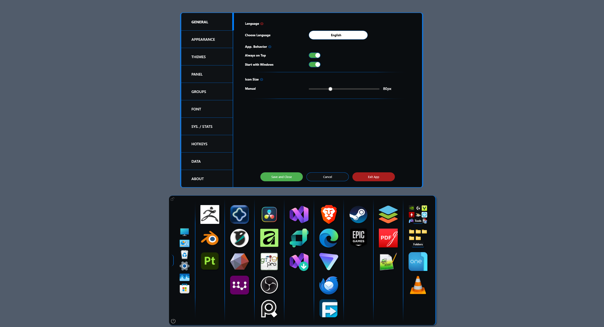
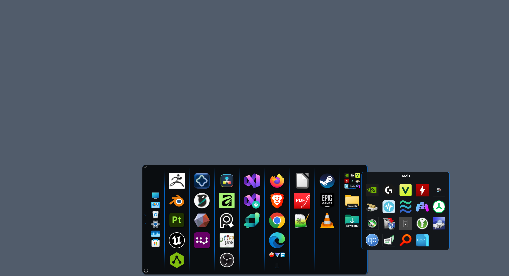
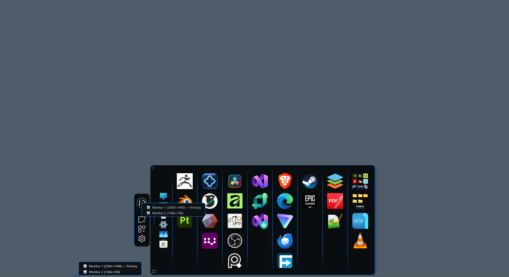
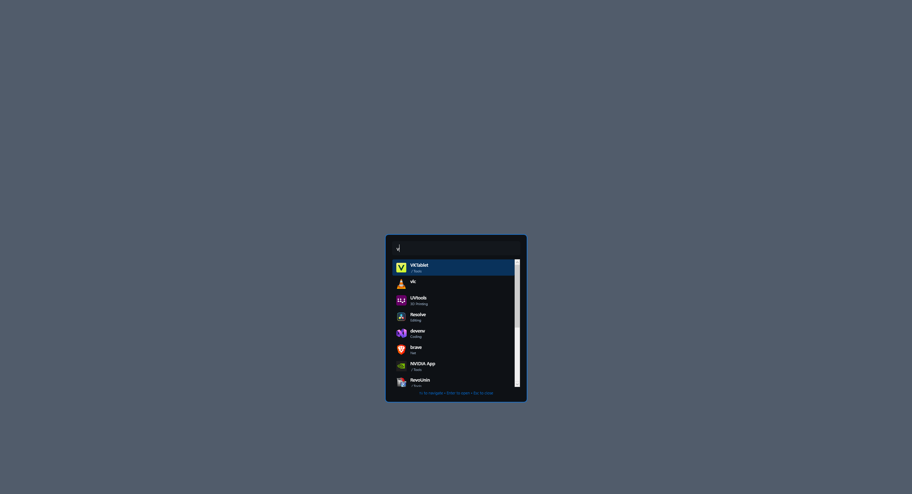
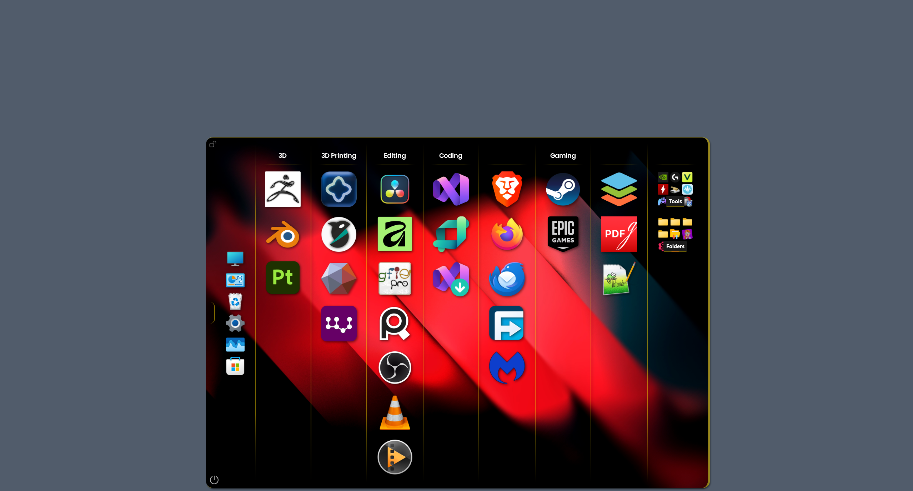
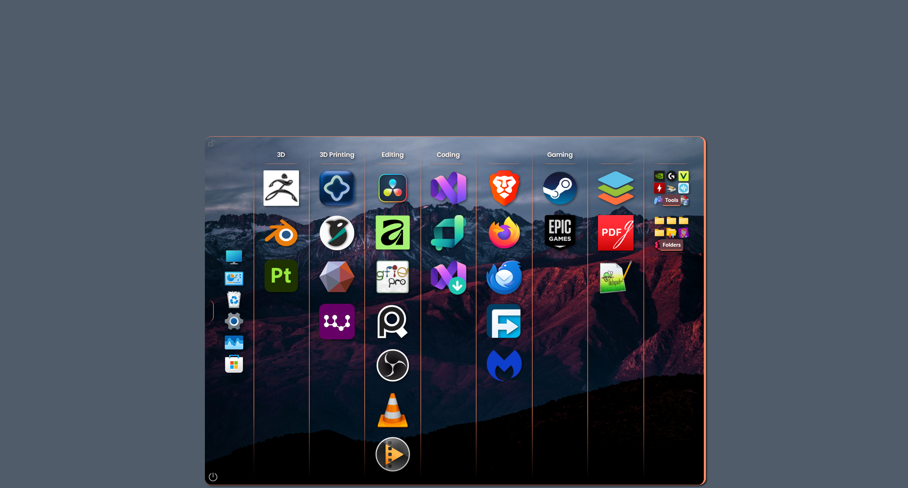
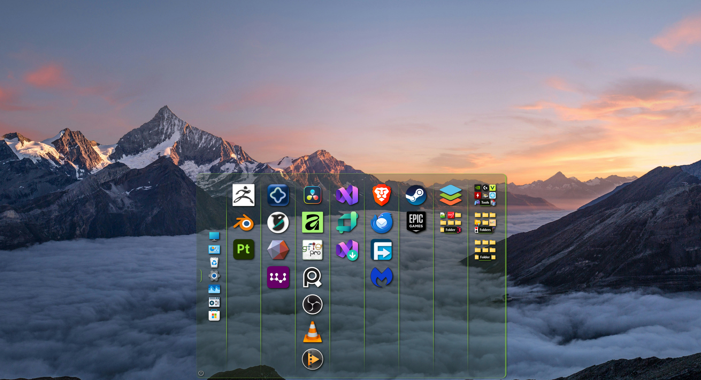
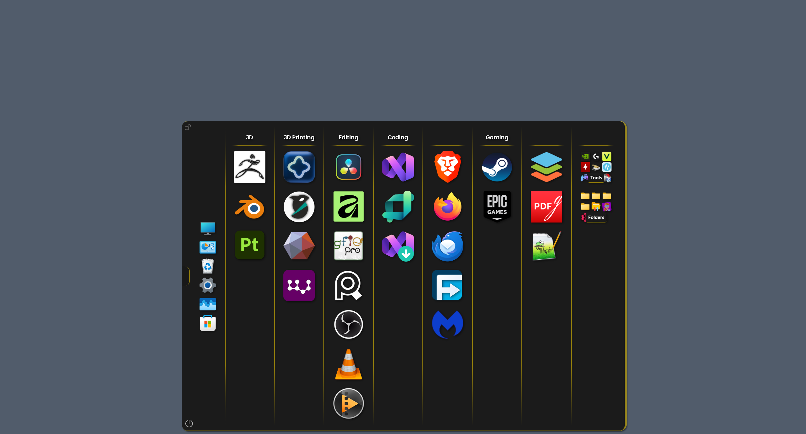
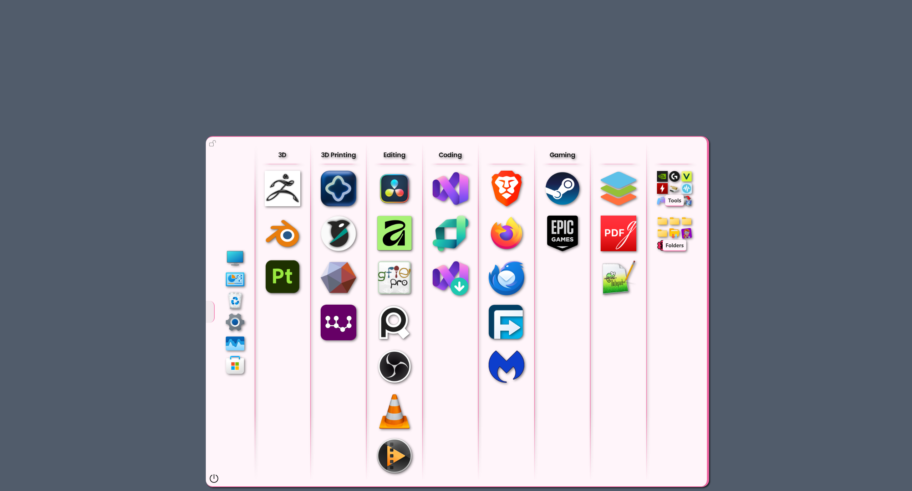

Deskepty
The Hidden Workspace Organizer for Windows 10 & 11
Keep your desktop clean without sacrificing instant access to your tools. Deskepty is a lightweight, zero-bloat launcher panel that stays hidden until you need it.
Get Deskepty on Microsoft Store
One-Time Purchase
No Subscriptions
100% Offline
See Deskepty in Action
Interface Screenshots










Built for Privacy & Speed
Fully offline with no telemetry, no cloud tracking, and no online account requirements. Experience native, instantaneous Windows performance with absolute minimal resource usage.
Distraction-Free Productivity
Organize apps, folders, games, and system tools into fully customizable, theme-aware groups. Perfect for developers, 3D creators, and digital artists who demand clean workspaces.
Product Capabilities
- Dynamic Drag-and-Drop: Instantly move apps, games, and folders directly from File Explorer with zero tedious editing modes required.
- Floating Folders: Access clean, theme-aware popup windows that display nested folder systems dynamically.
- Absolute Control Layouts: Leverage global hotkeys, taskbar integration, and multi-monitor setup tools tailored perfectly for stacked or wide displays.
- Extensive Customization: Personalize your workflow using 36 built-in native themes (including deep dark and light variants) alongside heavy appearance tuning.
- Global Architecture: Native 64-bit build, fully DPI-aware, optimized natively in 13 languages featuring robust right-to-left (RTL) formatting for Arabic users.
- Zero Retention Risk: Safe data portability. Seamlessly export, back up, or migrate your layouts between machines via human-readable JSON files.
What's New in Version 3.1
- Dedicated Appearance Control: Toggle and customize panel animation styles, core tracking positions (top or bottom), and dedicated toggle thresholds instantly.
- Smart Display Migration: Right-click the panel logo or toggle node to instantly shift Deskepty to any specific display in complex multi-monitor arrays.
- Deep Layout Nesting: Nested folders are now completely preserved and packed during comprehensive group export operations.
- Tab-Nav Redesign: Clean left-aligned sidebar controls completely replace legacy top-row styling inside global settings menus.